Τι είναι το LaTeX
Το LaTeX είναι ένα σύστημα στοιχειοθεσίας υψηλής ποιότητας. Περιλαμβάνει χαρακτηριστικά που έχουν σχεδιαστεί για τη παραγωγή τεχνικών και επιστημονικών εγγράφων. Το LaTeX είναι το ντε φάκτο πρότυπο για την επικοινωνία και δημοσίευση επιστημονικών εγγράφων.
Ιστορικά
Το LaTex γράφτηκε από τον Λέσλι Λάμπορτ (Leslie Lamport) στις αρχές της δεκαετίας του 1980. Μετά από λίγα χρόνια ο Φρανκ Μίτελμπαχ (Frank Mittelbach) ξαναέγραψε από την αρχή το LaTeX και σήμερα όταν αναφερόμαστε σε αυτό εννοούμε την έκδοση του.
Το LaTeX προφέρεται ως “λάτεχ” καθώς οι χαρακτήρες T, E, X προέρχονται από τα ελληνικά κεφαλαία γράμματα της λέξεις “τέχνη” και “τεχνολογία”. Για το λόγο αυτό, ο δημιουργός του TeX, Ντόναλντ Κνουθ (Donald Knuth), προωθεί την προφορά “τεχ” και όχι “τεξ” ή “τεκ”. Ο Λάμπορτ από την άλλη έχει πει ότι δεν ευνοεί ούτε αποθαρρύνει οποιαδήποτε προφορά για το LaTeX.
Εγκατάσταση Latex
Εγκατάσταση σε Arch Linux
Εγκαταστήστε το πακέτο texlive-langgreek εκτελώντας την παρακάτω εντολή.
sudo pacman -Sy texlive-langgreek
Εγκατάσταση σε Ubuntu
Εγκαταστήστε το πακέτο texlive-latex-extra εκτελώντας την παρακάτω εντολή.
sudo apt install texlive-latex-extra
Εγκατάσταση σε Windows
Για να εγκαταστήσετε το LaTeX θα πρέπει να πάτε στον ιστότοπο του MiKTeX, να κατεβάσετε τον Wizard και να τον εκτελέσετε.
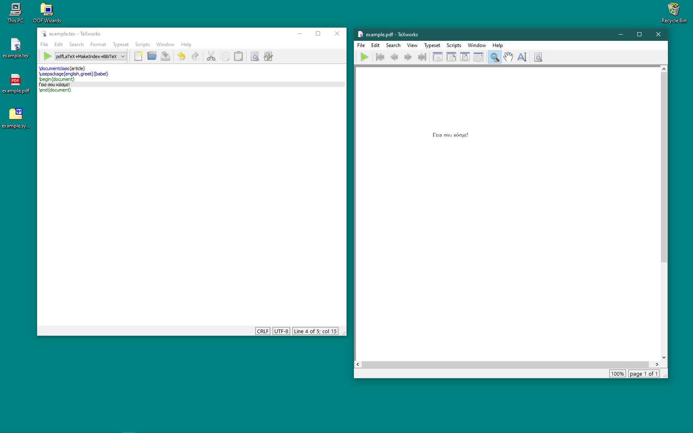Το πρώτο σας έγγραφο LaTeX
Η δημιουργία εγγράφων με το LaTeX είναι αρκετά διασκεδαστική και απλή σε αντίθεση με το Word. Δεν είναι όμως τέλειο, έχει και αυτό τη δυσκολία του καθώς στην αρχή μπορεί να φαίνεται λίγο τρομαχτικό και δύσχρηστο αλλά με λίγη εξάσκηση μπορεί κάποιος να το μάθει και να γίνει πολύ παραγωγικός στη δημιουργία εγγράφων.
Ένα απλό έγγραφο γραμμένο με το LaTeX είναι το παρακάτω:
\documentclass{article} \begin{document} Hello World! \end{document}
Όπως μπορούμε να δούμε το LaTeX χρησιμοποιεί δηλώσεις όπου εξηγούν το τι κάνουν. Η δήλωση \documentclass{type} ορίζει τον τύπο εγγράφου που θέλουμε να δημιουργήσουμε και οι δηλώσεις \begin{document} και \end{document}, ορίζουν την αρχή και το τέλους του εγγράφου. Γενικά όλες οι εντολές έχουν την ίδια δομή όπου είναι αυτή εδώ: \commandName{option}.
Τα αρχεία LaTeX έχουν κατάληξη .tex και είναι απλά αρχεία κειμένου. Όταν θέλουμε να μετατρέψουμε τον κώδικα σε ένα αρχείο PDF χρησιμοποιούμε την εντολή pdflatex με παράμετρο το αρχείο. Αν μετατρέψουμε τον παραπάνω κώδικα σε PDF θα δούμε πως έχουμε το κείμενο Hello World! και τον αριθμό της σελίδας στο κάτω μέρος, όπου το LaTeX πρόσθεσε τον αριθμό επειδή έχουμε ορίσει τον τύπο του εγγράφου ως άρθρο.
LaTeX και Ελληνικά
\documentclass{article} \begin{document} Γεια σου κόσμε! \end{document}
Αν προσπαθήσουμε να μετατρέψουμε το παραπάνω κείμενο LaTeX σε ένα PDF, θα δούμε πως το LaTeX μας βγάζει κάποιο σφάλμα. Αυτό συμβαίνει επειδή το LaTeX δεν ξέρει τι γλώσσα χρησιμοποιούμε, για να μπορέσουμε να γράψουμε ελληνικά θα χρησιμοποιήσουμε το πακέτο Babel.
Αν θέλετε να δείτε περισσότερα για το πακέτο babel πατήστε εδώ.
\documentclass{article} \usepackage[greek,english]{babel} \begin{document} \textgreek{Γεια σου κόσμε!} \end{document}
Η εντολή \textgreek{Γεια σου κόσμε!} (ή \textlatin{Hello World!}), που χρησιμοποιήσαμε στο παράδειγμα είναι χρήσιμη όταν δεν θέλουμε να αλλάξουμε τη γλώσσα που χρησιμοποιούμε, αλλά αν θέλουμε να την αλλάξουμε πρέπει να χρησιμοποιήσουμε την εντολή \selectlanguage{greek}. Το ίδιο μπορούμε να κάνουμε για να αλλάξουμε τη γλώσσα στα αγγλικά \selectlanguage{english}.
\documentclass{article} \usepackage[greek,english]{babel} \begin{document} \selectlanguage{greek} Γεια σου κόσμε! \end{document}
Αξίζει να σημειωθεί πως και το παρακάτω παράδειγμα θα μετατραπεί χωρίς κάποιο πρόβλημα.
\documentclass{article} \usepackage[english,greek]{babel} \begin{document} Γεια σου κόσμε! \end{document}
Μορφοποίηση
Λογική μορφοποίηση κειμένου
Στο LaTeX όταν θέλουμε να γράψουμε κάτι, όπως έναν τίτλο, δεν χρειάζεται να ορίσουμε τη γραμματοσειρά, το χρώμα ή γενικά το οτιδήποτε για τον τίτλο μας. Το μόνο που έχουμε να κάνουμε είναι να πούμε στο LaTeX πως αυτό που γράφουμε είναι ο τίτλος, κατόπιν το LaTeX θα ασχοληθεί με τη μορφοποίηση του κειμένου. Αυτός ο τρόπος μορφοποίησης είναι γνωστός ως λογική μορφοποίηση. Για να καταλάβουμε καλύτερα τι είναι η λογική μορφοποίηση ας δούμε το παρακάτω παράδειγμα.
\documentclass{article} \usepackage[english,greek]{babel} \begin{document} \title{Λογική μορφοποίηση κειμένου} \author{Δημήτριος Τζήκας} \date{21 Φεβρουαρίου, 2020} \maketitle \end{document}
Όπως μπορούμε να δούμε στο παράδειγμα, δεν έχουμε ορίσει πουθενά το πως θέλουμε να γίνει η μορφοποίηση. Το μόνο που έχουμε ορίσει είναι το όνομα του τίτλου, του συγγραφέα και την ημερομηνία. Επίσης, έχουμε χρησιμοποιήσει και την εντολή \maketitle, όπου δηλώνει στο LaTeX πως θέλουμε να δημιουργήσει τον τίτλο.
Το έγγραφο που δημιουργήσαμε έχει μορφοποιημένο τον τίτλο, συγγραφέα και ημερομηνία, γιατί έγινε αυτό; Η μορφοποίηση έχει γίνει επειδή ορίσαμε τον τύπο του εγγράφου ως άρθρο. Το LaTeX χρησιμοποιεί την κλάση ως το πρότυπο για να μορφοποιήσει το κείμενο μας, όπου θα μπορούσαμε να αλλάξουμε τον τύπο και να αφήσουμε το LaTeX να αλλάξει τη μορφοποίηση. Αυτό είναι ιδιαίτερα χρήσιμο καθώς ας φανταστούμε πως θέλουμε να δημιουργήσουμε κάποια βιογραφικά, αλλά έχουμε διάφορους παραλήπτες όπου ζητάν να χρησιμοποιήσουμε διαφορετικά πρότυπα. Σε αυτό το σενάριο θα έπρεπε να ασχοληθούμε με τη μορφοποίηση τόσες φορές όσα είναι και τα διαφορετικά πρότυπα, με το LaTeX όμως το μόνο που έχουμε να κάνουμε είναι να γράψουμε το βιογραφικό μας και κατόπιν να πούμε το LaTeX να μορφοποιήσει το κείμενο για κάθε πρότυπο που έχουμε.
Σε αυτό το σημείο θα ήταν καλό να σημειωθεί πως το LaTeX θεωρεί τα πολλαπλά κενά ως ένα κενό και τις πολλαπλές κενές γραμμές ως μια κενή γραμμή.
Ειδική χαρακτήρες
Για το LaTeX οι ακόλουθοι χαρακτήρες έχουν ειδική σημασία: #, $, %, ^, &, _, {, }, ~, \. Για να μπορέσουμε να τους χρησιμοποιήσουμε θα πρέπει να χρησιμοποιήσουμε τον χαρακτήρα \.
... \section{Ειδική χαρακτήρες} Για το {\LaTeX} οι ακόλουθοι χαρακτήρες έχουν ειδική σημασία \textlatin{\#} \$ \% \^ \& \_ \{ \} \~ \\ Ο χαρακτήρας \textlatin{\#} με ελληνικό κείμενο: \# ...
Για τον χαρακτήρα # θα πρέπει να δηλώσουμε πως είναι αγγλικό κείμενο γιατί είναι προβληματικό με το ελληνικό κείμενο.
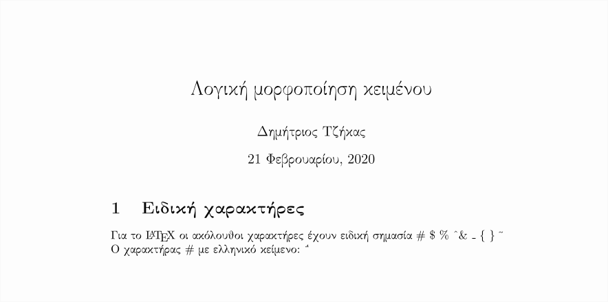Μορφοποίηση κειμένου
Μέγεθος γραμματοσειράς
\tiny Tiny \scriptsize Scriptsize \footnotesize Footnotesize \small Small \normalsize Normalsize \large Large \Large Large \LARGE Large
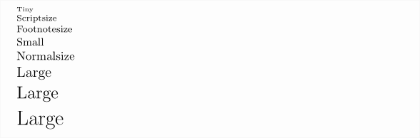Για περισσότερα πατήστε εδώ.
Δομή εγγράφου
Με το LaTeX η δόμηση των εγγράφων είναι πολύ εύκολη, το μόνο που έχουμε να κάνουμε είναι να χρησιμοποιήσουμε τις παρακάτω εντολές:
Αυτές οι εντολές, στις αγκύλες, παίρνουν έναν τίτλο και το κείμενο που ακολουθεί ανήκει στην παράγραφο ή στην ενότητα που ορίσαμε.
\documentclass{article} \usepackage[english,greek]{babel} \begin{document} \title{Λογική μορφοποίηση κειμένου} \author{Δημήτριος Τζήκας} \date{21 Φεβρουαρίου, 2020} \maketitle \section{Τίτλος ενότητας} Αυτό το κείμενο ανήκει στην πρώτη ενότητα. \subsection{Τίτλος υποενότητας} Αυτό το κείμενο ανήκει στην πρώτη υποενότητα. \subsubsection{Τίτλος υπο-υποενότητας} Αυτό το κείμενο ανήκει στην πρώτη υπο-υποενότητα. \paragraph{Τίτλος παραγράφου} Αυτό το κείμενο ανήκει στην παράγραφο. \subparagraph{Τίτλος υποπαραγράφου} Αυτό το κείμενο ανήκει στην υποπαράγραφο. \end{document}
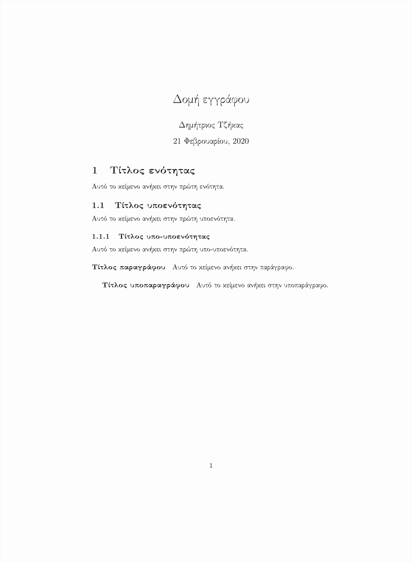Επίσης αν δεν θέλουμε να δηλώσουμε τίτλο παραγράφου, μπορούμε να χρησιμοποιήσουμε την εντολή \par.
\documentclass{article} \usepackage[english,greek]{babel} \begin{document} \title{Επτά επί Θήβας} \author{Αισχύλος} \maketitle \section{ΥΠΟΘΕΣΙΣ} Το δράμα τούτο, το οποίον δικαίως ο Αριστοφάνης εις τους Βατράχους του ονομάζει «Άρεως μεστόν», αποτελεί μέρος τριλογίας, της οποίας τα δυο πρώτα δράματα, απολεσθέντα, ήσαν ο Λάιος και ο Οιδίπους. Όπως εις τας Ικέτιδας και τους Πέρσας του αυτού ποιητού και ενταύθα επικρατεί το λυρικόν και επικόν στοιχείον μάλλον. Μακρά είναι τα λυρικά άσματα και οι κομμοί, μακρόταται δε και τελείως επικαί αι περιγραφαί των Αργείων στρατηγών των πολιορκούντων τας Θήβας. Δια τούτο κρίνεται από τας παλαιοτέρας τραγωδίας του ποιητού. \par Το κυρίως τραγικόν στοιχείον είναι η αλληλοκτονία εν μονομαχία προ των τειχών της πολιορκουμένης πόλεως των αδελφών Ετεοκλέους και Πολυνείκους, των υιών του Οιδίποδος. Τοιουτοτρόπως εκληρούται η φοβερά κατάρα του πατρός των, η οποία δια παντός του δράματος ενσαρκώνει την Μοίραν της τραγικής οικογενείας. Μετά τον διπλούν φόνον, επάνω εις τα νεκρά σώματα των δυο αδελφών, ο χορός αποτελούμενος από Θηβαίας παρθένους ψάλλει τον λυρικώτατον «Ύμνον των Ερινύων» καθώς τον οναμάζουν αι ίδιαι, τούτον δε επακολουθεί ο παθητικώτατος θρήνος των δυο αδελφών Αντιγόνης και Ισμήνης, ο οποίος και έπρεπε να τελειώνη το δράμα. \par Αλλά έπεται και μια τελευταία σκηνή ακόμη. Η Γερουσία της πόλεως απαγορεύει την ταφήν του εχθρού της πατρίδος Πολυνείκους∙ κατά της αποφάσεως όμως ταύτης εξεγείρεται και διαμαρτύρεται η ευσεβής φιλαδελφεία της Αντιγόνης, με την οποίαν συντάσσεται και μέρος του χορού, ενώ το έτερο ημιχόριον, συμμεριζόμενον την απόφασιν της πόλεως, συνοδεύει τον νεκρόν του Ετεοκλέους όστις μεταφέρεται προς μεγαλοπρεπή ταφήν. Αυτή δε η σκηνή, περιέχουσα ως εν σπέρματι την υπόθεσιν της Αντιγόνης του Σοφοκλέους, έκαμε πολλούς των κριτικών να υποπτεύωσιν ότι οφείλεται ίσως εις μεταγενεστέραν διασκευήν. \end{document}
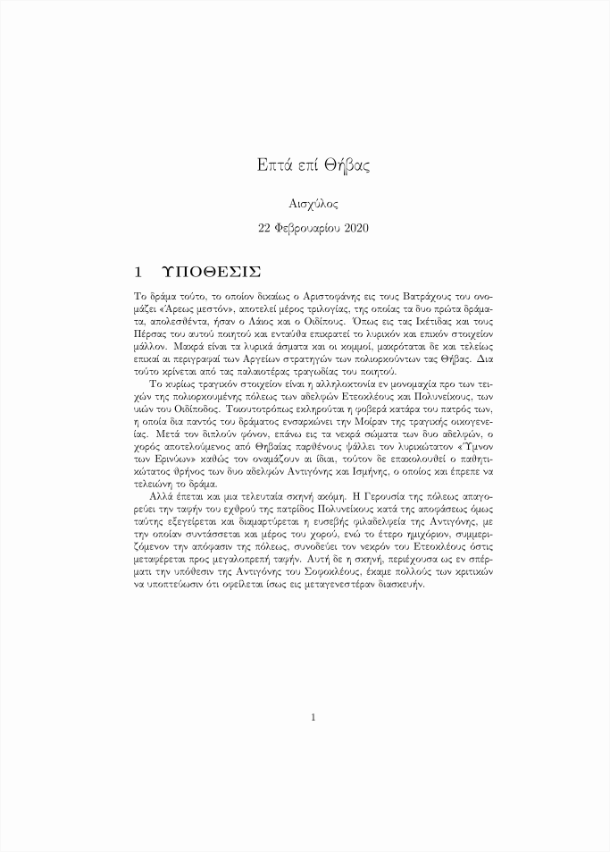Προσθήκη φωτογραφιών
Με το LaTeX είναι αρκετά εύκολη η τοποθέτηση φωτογραφίας στο έγγραφο μας. Ένας τρόπος για να μπορέσουμε να βάλουμε φωτογραφίες, είναι να χρησιμοποιήσουμε το πακέτο graphicx, όπως στο παρακάτω παράδειγμα.
Αν θέλετε να δείτε περισσότερα για το πακέτο graphicx πατήστε εδώ.
\documentclass{article} \usepackage{graphicx} \usepackage[english,greek]{babel} \begin{document} \title{Προσθήκη φωτογραφιών} \author{Δημήτριος Τζήκας} \maketitle \begin{figure} \includegraphics[width=\linewidth]{circuit.png} \caption{Απλό κύκλωμα.} \label{fig:circuit1} \end{figure} Το σχήμα \ref{fig:circuit1} είναι ένα απλό κύκλωμα. \end{document}
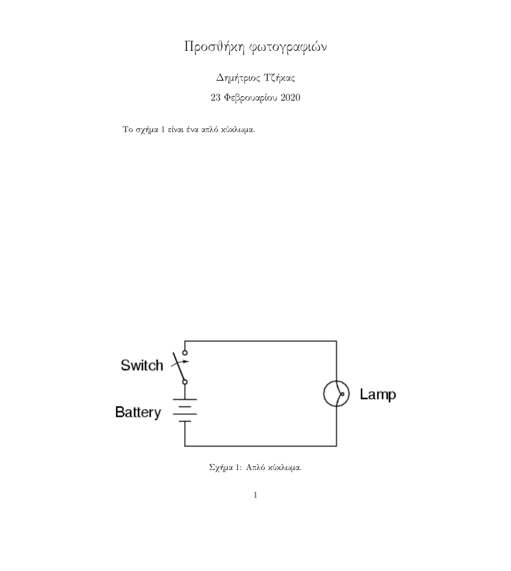Στο παράδειγμα βλέπου πως πρέπει πρώτα να έχουμε εισάγει το πακέτο, αυτό το κάνουμε με την εντολή \usepackage{graphicx}. Κατόπιν, πριν μπορέσουμε να εισάγουμε τη φωτογραφία, πρέπει να δηλώσουμε το περιβάλλον figure, όπου δηλώνουμε την αρχή του με την δήλωση \begin{figure} και το τέλος με την δήλωση \end{figure}. Μέσα στο περιβάλλον που δηλώσαμε, μπορούμε να χρησιμοποιήσουμε την εντολή \includegraphics{path\to\image} για να εισάγουμε τη φωτογραφία. Στο παράδειγμα χρησιμοποιήσαμε και το όρισμα width, όπου το κάναμε ίσο με το πλάτος της γραμμής.
Στο LaTeX, το περιβάλλον αποτελεί ένα τμήμα του εγγράφου όπου ισχύουν κάποιοι κανόνες.
Επίσης μπορούμε να χρησιμοποιήσουμε τις δηλώσεις \caption{} και \label{}. Η δήλωση \caption{} ορίζει ένα κείμενο για τη λεζάντα της φωτογραφία και η δήλωση \label{} ορίζει μια ετικέτα για να μπορούμε να αναφερθούμε στη φωτογραφία. Στο παράδειγμα γράψαμε “Το σχήμα \ref{fig:circuit1} είναι ένα απλό κύκλωμα.”, όπου δεν χρειαζόταν να γνωρίζουμε ποιος ήταν ο αριθμός της φωτογραφίας, αλλά αφήσαμε το LaTeX να κάνει την αναφορά στη φωτογραφία.
Αν προσέξουμε το παράδειγμα, θα δούμε πως πρώτα δηλώσαμε τη φωτογραφία και μετά το κείμενο, όμως, στο PDF αρχείο είναι ανάποδα, γιατί έγινε αυτό; Όπως έχουμε πει, το LaTeX είναι υπεύθυνο για τη μορφοποίηση του κειμένου και όχι εμείς, οπότε αν το LaTeX θεωρεί κατάλληλο να αλλάξει τη σειρά, θα το κάνει. Φυσικά, δεν θα αλλάξει τη σειρά σε παραγράφους αλλά μόνο σε αντικείμενα που δεν υπάρχει κάποια σημασία στη σειρά εμφάνισης τους. Όμως, αν θέλουμε να τοποθετήσουμε κάπου συγκεκριμένα τη φωτογραφία μας, τι κάνουμε; Το πακέτο graphicx μας δίνει κάποιες επιλογές, αυτές είναι:
Στο παρακάτω παράδειγμα χρησιμοποιούμε το όρισμα h. Παρατηρήστε το αποτέλεσμα, γιατί πιστεύετε η φωτογραφία είναι κάτω από τον τίτλο;
\documentclass{article} \usepackage{graphicx} \usepackage[english,greek]{babel} \begin{document} \title{Προσθήκη φωτογραφιών} \author{Δημήτριος Τζήκας} \maketitle \begin{figure}[h] \includegraphics[width=\linewidth]{circuit.png} \caption{Απλό κύκλωμα.} \label{fig:circuit1} \end{figure} Το σχήμα \ref{fig:circuit1} είναι ένα απλό κύκλωμα. \end{document}
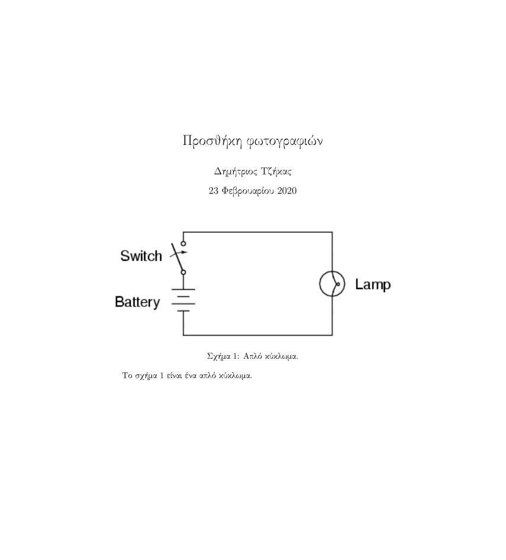Το LaTeX ξέρει, εφόσον δηλώσαμε, πως θέλουμε η φωτογραφία να είναι στο πάνω μέρος της σελίδας. Ο λόγος που δεν τοποθέτησε τη φωτογραφία στο πάνω μέρος της σελίδας, είναι επειδή υπάρχει ένας τίτλος. Το LaTeX γνωρίζει πως δεν είναι σωστό να αλλάξει τοποθεσία αυτά τα δύο αντικείμενα, για αυτόν το λόγο δεν τοποθετεί τη φωτογραφία στο πάνω μέρος της σελίδας.
Τοποθέτηση πολλαπλών φωτογραφιών
Στο παράδειγμα που ακολουθεί τοποθετούμε πολλαπλές φωτογραφίες. Για να μπορέσουμε να τις ομαδοποιήσουμε πρέπει να χρησιμοποιήσουμε το πακέτο subcaption.
\documentclass{article} \usepackage{graphicx} \usepackage{subcaption} \usepackage[english,greek]{babel} \begin{document} \title{Τοποθέτηση πολλαπλών φωτογραφιών} \author{Δημήτριος Τζήκας} \maketitle \begin{figure}[h!] \centering \begin{subfigure}[b]{0.4\linewidth} \includegraphics[width=\linewidth]{circuit.png} \caption{Απλό κύκλωμα Α.} \end{subfigure} \begin{subfigure}[b]{0.4\linewidth} \includegraphics[width=\linewidth]{circuit.png} \caption{Απλό κύκλωμα Β.} \end{subfigure} \caption{Απλά κυκλώματα.} \label{fig:circuit1} \end{figure} Το σχήμα \ref{fig:circuit1} είναι ένα απλό κύκλωμα. \end{document}
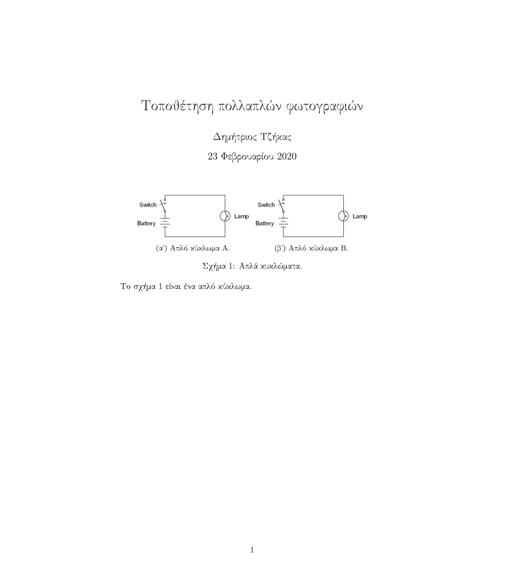Το μόνο που χρειάζεται για να ομαδοποιήσουμε τις φωτογραφίες, είναι να δηλώσουμε το περιβάλλον subfigure, κατόπιν μπορούμε να χρησιμοποιήσουμε όλες τις εντολές που μας παρέχει το πακέτο graphicx.
Πίνακας περιεχομένων
Για να δημιουργήσουμε τον πίνακα περιεχομένων, πρέπει να χρησιμοποιήσουμε την εντολή \tableofcontents και το LaTeX θα δημιουργήσει αυτόματα τον πίνακα περιεχομένων. Προσοχή, το LaTeX θα δημιουργήσει τον πίνακα βάσει των δηλώσεων που έχουμε κάνει, αυτό πάει να πει πως αν δεν χρησιμοποιηθούν σωστά οι εντολές, θα υπάρχει πρόβλημα με τον πίνακα περιεχομένων.
Για να μπορέσει το LaTeX να δημιουργήσει τον πίνακα περιεχομένων θα πρέπει να κάνουμε δύο φορές μεταγλώττιση το αρχείο.
\documentclass{article} \usepackage{graphicx} \usepackage{subcaption} \usepackage[english,greek]{babel} \begin{document} \title{Πίνακας περιεχομένων} \author{Αριστοφάνης} \date{} \maketitle \newpage \tableofcontents \newpage \section{Ἀχαρνεῖς} ... \newpage \section{Ἱππεῖς} ... \end{document}
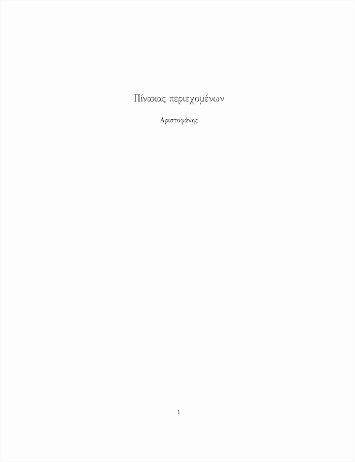 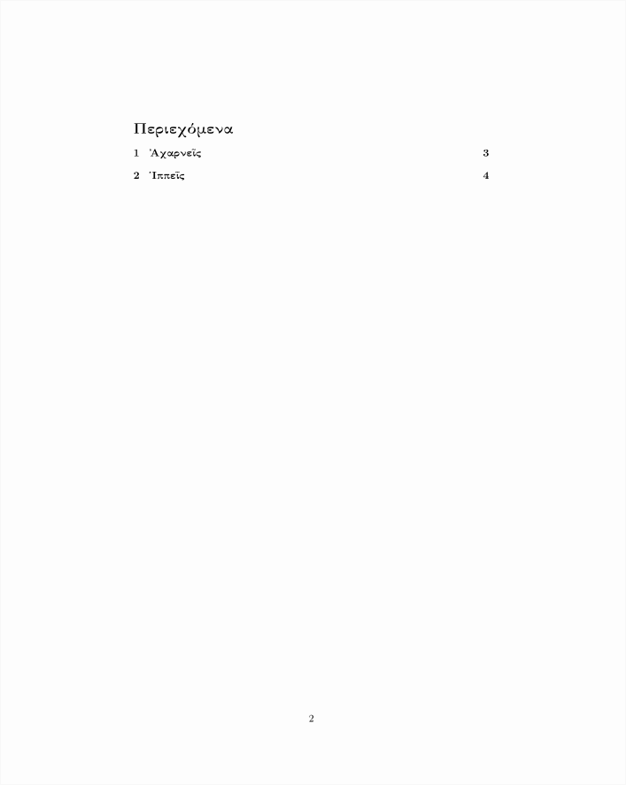 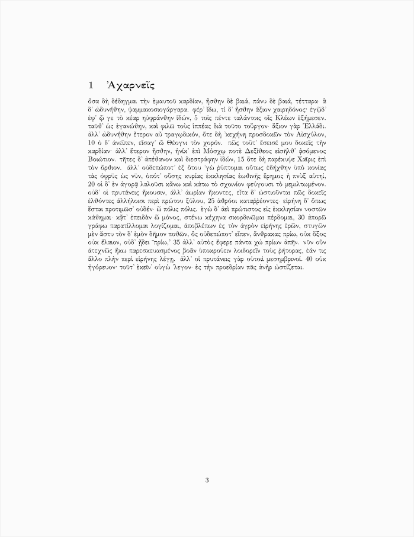 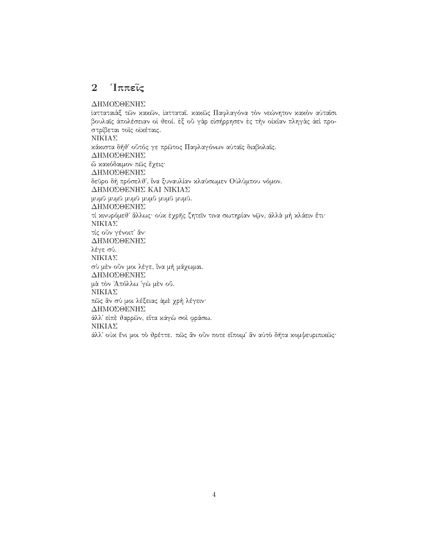Με τον ίδιο τρόπο μπορούμε να δημιουργήσουμε πίνακες περιεχομένων για τα σχήματα, με την εντολή \listoffigures και για του πίνακες (όχι πίνακες περιεχομένων), με την εντολή \listoftables.
... \newpage \tableofcontents \listoffigures \listoftables \newpage ...
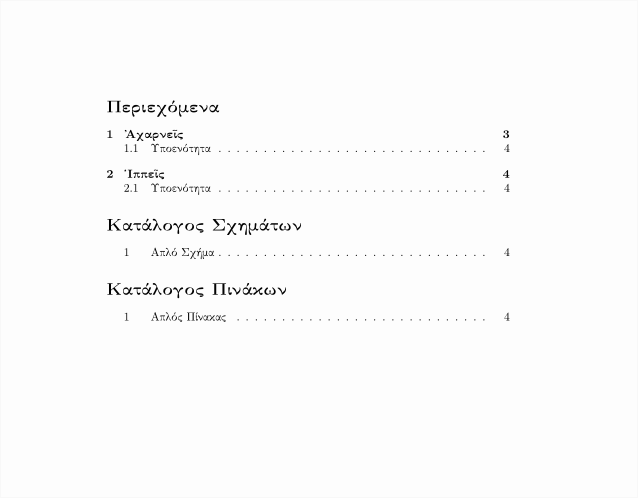Βιβλιογραφία
Αυτόματη δημιουργία πινάκων
Για να δημιουργήσουμε έναν πίνακα θα χρειαστούμε πρώτα να ορίσουμε το περιβάλλον tabular. Το περιβάλλον tabular μπορεί να χρησιμοποιηθεί για να στοιχειοθετήσει πίνακες με προαιρετικές οριζόντιες και κάθετες γραμμές. Το LaTeX καθορίζει αυτόματα το πλάτος των στηλών.
Ιστοσελίδες για αυτόματη δημιουργία πινάκων: Tables Generator και LaTeX Complex Table Editor
Το πρώτο που έχουμε να κάνουμε είναι να δηλώσουμε το περιβάλλον.
\begin{tabular}[pos]{table spec} ... \end{tabular}
Το {tabular} είναι το όνομα από το περιβάλλον που θέλουμε να χρησιμοποιήσουμε, το [pos] είναι η θέση που θέλουμε να έχει ο πίνακας και το {table spec} δηλώνει στο LaTeX την ευθυγράμμιση που θα χρησιμοποιηθεί σε κάθε στήλη και τις κάθετες γραμμές που θα εισαχθούν.
Ορίσματα του {table spec}:Παραδείγματα
\begin{tabular}{ l c r } 1 & 2 & 3 \\ 4 & 5 & 6 \\ 7 & 8 & 9 \\ \end{tabular}
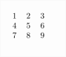\begin{tabular}{ l | c | r } 1 & 2 & 3 \\ 4 & 5 & 6 \\ 7 & 8 & 9 \\ \end{tabular}
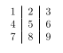\begin{tabular}{ | l | c | r |} \hline 1 & 2 & 3 \\ \hline 4 & 5 & 6 \\ \hline 7 & 8 & 9 \\ \hline \end{tabular}
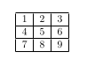\begin{tabular}{|r|l|} \hline 7C0 & hexadecimal \\ 3700 & octal \\ \cline{2-2} 11111000000 & binary \\ \hline \hline 1984 & decimal \\ \hline \end{tabular}
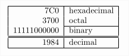Για περισσότερα πατήστε εδώ.
Δημιουργία πινάκων με csv
Το πακέτο που θα χρησιμοποιήσουμε για να δημιουργήσουμε αυτόματα τον πίνακα, είναι το csvsimple. Το συγκεκριμένο πακέτο είναι πολύ απλό στη χρήση του αλλά δεν υποστηρίζει ελληνικά.
Το csv (Comma Separated Values) είναι ένα απλό αρχείο κειμένου όπου οι τιμές του χωρίζονται με κόμμα.
\documentclass{article} \usepackage{csvsimple} \begin{document} \csvautotabular{grade.csv} \end{document}
name,givenname,matriculation,gender,grade Maier,Hans,12345,m,1.0 Huber,Anna,23456,f,2.3 Weißbäck,Werner,34567,m,5.0 Bauer,Maria,19202,f,3.3
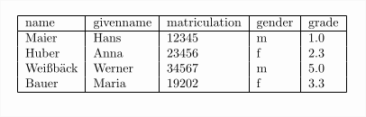Για περισσότερα πατήστε εδώ.
Αυτόματη δημιουργία διαγραμμάτων
Η δημιουργία διαγραμμάτων είναι αρκετά εύκολη, τουλάχιστον για απλά διαγράμματα. Για να μπορέσουμε να ορίσουμε το διάγραμμα μας, θα πρέπει πρώτα να δηλώσουμε το περιβάλλον tikzpicture και μέσα σε αυτό το περιβάλλον axis, κατόπιν το μόνο που έχουμε να κάνουμε είναι να χρησιμοποιήσουμε τη δήλωση \addplot για να δημιουργήσουμε το διάγραμμα μας.
Η σύνταξη της δήλωσης \addplot είναι η εξής: \addplot[options]{file or function}
Ας δούμε το παρακάτω παράδειγμα.
\documentclass{article} \usepackage{pgfplots} \begin{document} \begin{tikzpicture} \begin{axis}[] \addplot[ domain=0:3, samples=10 ]{x}; \end{axis} \end{tikzpicture} \end{document}
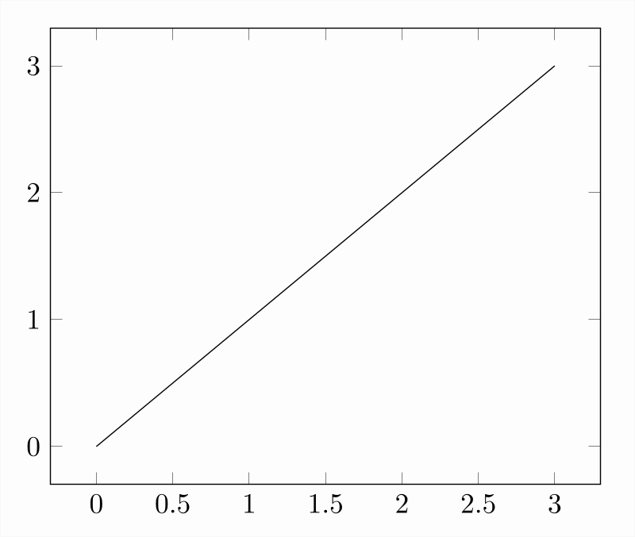Όταν βάζουμε μεγάλο δείγμα ο υπολογιστής θα χρειαστεί περισσότερη ώρα για να υπολογίσει το αποτέλεσμα, οπότε θα πρέπει να μη δηλώνουμε πολύ μεγάλα ποσά καθώς αν έχουμε πολλά διαγράμματα θα καθυστερεί πολύ.
Στο παράδειγμα μπορούμε να δούμε πως έχουμε ορίσει το διάστημα 0-3 και παίρνουμε 10 δείγματα για να κάνουμε το διάγραμμα. Ας δούμε ένα άλλο διάγραμμα με τις συναρτήσεις x, x^2, x^3, x^4.
... \begin{axis}[] \addplot[ domain=0:3, samples=10 ]{x}; \addplot[ red, domain=0:3, samples=10 ]{x^2}; \addplot[ green, domain=0:3, samples=10 ]{x^3}; \addplot[ blue, domain=0:3, samples=10 ]{x^4}; \end{axis} ...
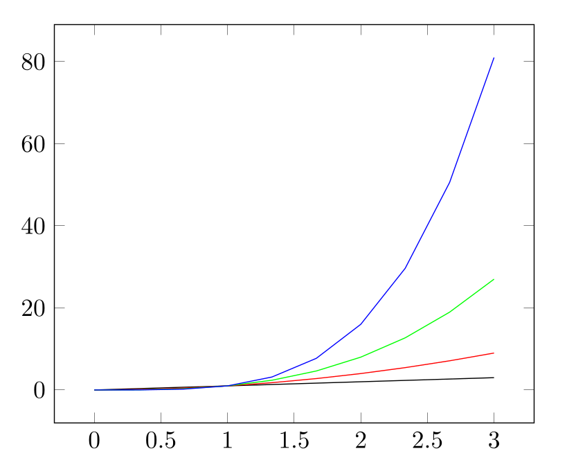Δημιουργία διαγραμμάτων με csv
Το να χρησιμοποιούμε csv αρχεία για να δημιουργούμε τα διαγράμματα είναι μονόδρομος, ειδικά αν έχουμε μεγάλα σε όγκο δεδομένα αλλά ακόμη και στη περίπτωση των συναρτήσεων είναι καλό να τα χρησιμοποιούμε, καθώς δεν χρειάζεται ο υπολογιστής να υπολογίζει τις τιμές κάθε φορά που μεταγλωττίζουμε το κείμενο.
Η σύνταξη της εντολής για να κάνουμε εισαγωγή δεδομένων από αρχείο csv είναι η εξής: \addplot table [x=col_name, y=col_name, col sep=comma] {file};
... \begin{axis}[] \addplot table [x=a, y=b, col sep=comma] {data.csv}; \addplot table [x=a, y=b, col sep=comma] {data2.csv}; \end{axis} ...
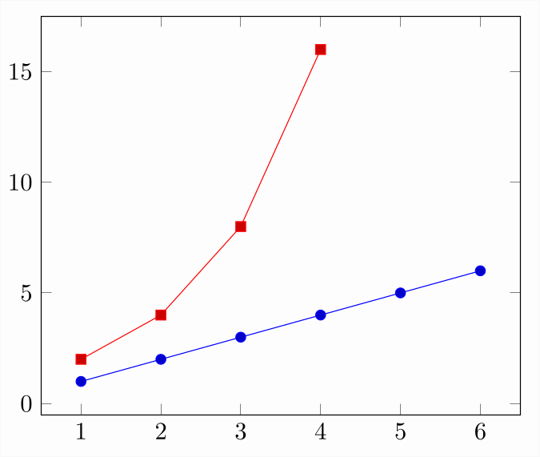Για περισσότερα πατήστε εδώ.
Δημιουργία παρουσιάσεων
Για να δημιουργήσουμε την πρώτη μας παρουσίαση θα χρησιμοποιήσουμε το πακέτο beamer, για να το κάνουμε αυτό πρέπει να δηλώσουμε τον τύπο του εγγράφου ως beamer.
\documentclass{beamer} \begin{document} My first presentation with {\LaTeX} \end{document}
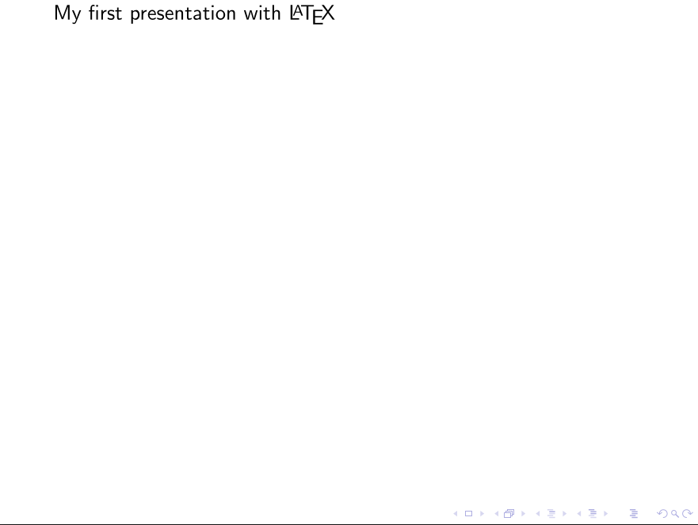Για να δημιουργήσουμε την πρώτη διαφάνεια όπου θα έχει τον τίτλο της παρουσίασης, το όνομα μας, etc, μπορούμε να χρησιμοποιήσουμε τις δηλώσεις που χρησιμοποιούσαμε μέχρι στιγμής.
\documentclass{beamer} \title{{\LaTeX} presentation} \author{Dimitris Tzikas} \date{\today} \begin{document} \maketitle \end{document}
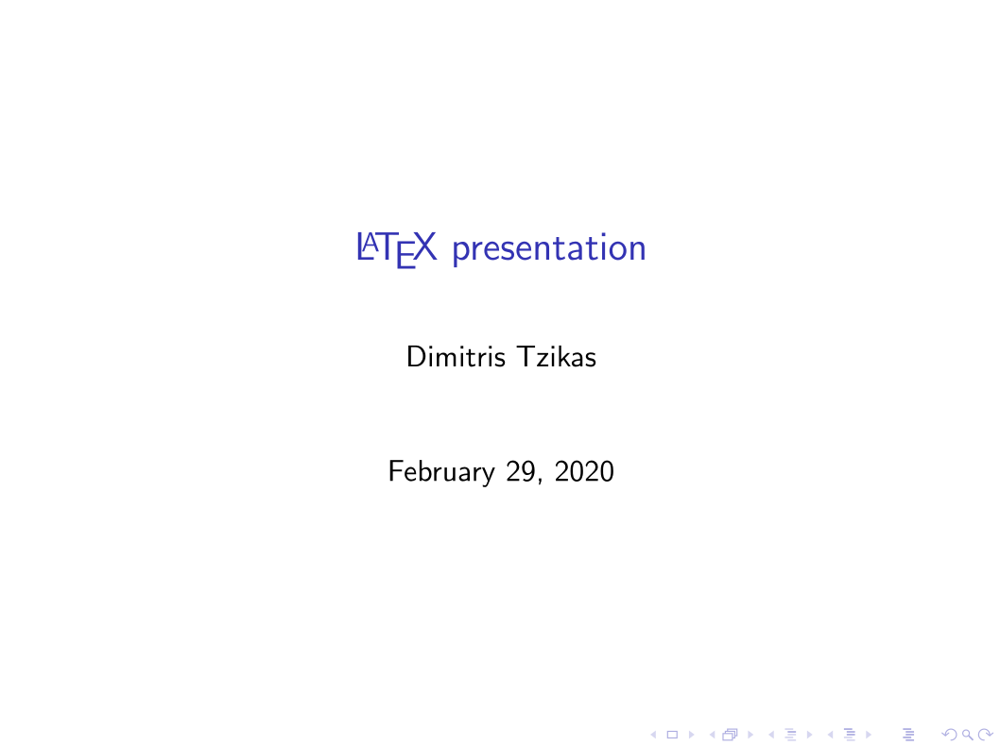Το LaTeX χρησιμοποιεί δύο ορολογίες στις παρουσιάσεις. Η πρώτη είναι το frame, όπου δηλώνει το περιεχόμενο και η δεύτερη είναι η διαφάνεια, όπου είναι σελίδα στη παρουσίαση μας. Ίσως αυτή να μην είναι η καλύτερη εξήγηση αλλά θα δούμε παρακάτω μέσω παραδειγμάτων ποια είναι η διαφορά τους. Για τώρα ας δημιουργήσουμε ένα frame.
\documentclass{beamer} \title{{\LaTeX} presentation} \author{Dimitris Tzikas} \date{\today} \begin{document} \maketitle \begin{frame} \begin{itemize} \item One \item Two \item Three \end{itemize} \end{frame} \end{document}
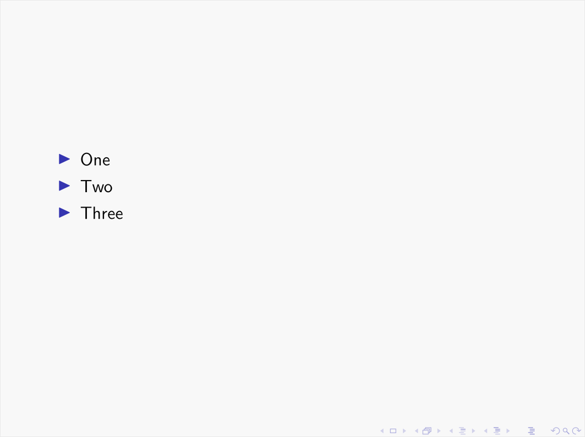Χρησιμοποιώντας το περιβάλλον frame μπορέσαμε και δημιουργήσαμε το πρώτο μας frame, στο οποίο βάλαμε μια λίστα. Ας υποθέσουμε πως θέλουμε να δείξουμε με τη σειρά τα αντικείμενα της λίστας και όχι όλα μαζί. Για να το κάνουμε αυτό μπορούμε να χρησιμοποιήσουμε την εντολή \pause.
... \begin{frame} \begin{itemize} \item One \pause \item Two \pause \item Three \end{itemize} \end{frame} ...
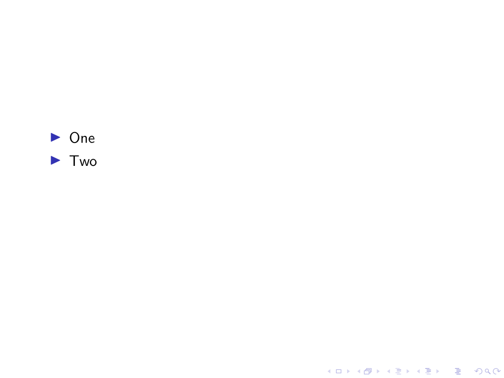Εμείς δηλώσαμε ένα frame στο οποίο χρησιμοποιήσαμε την εντολή \pause, το αποτέλεσμα είναι πως το LaTeX δημιούργησε τρις διαφάνειες.
Ας υποθέσουμε πως δεν μας αρέσει η εμφάνιση, τι μπορούμε να κάνουμε; Η απάντηση είναι πως μπορούμε να δημιουργήσουμε το δικός μας πρότυπο ή να αλλάξουμε το θέμα που χρησιμοποιούμε, εμείς θα κάνουμε το δεύτερο. Για να αλλάξουμε το θέμα μπορούμε να χρησιμοποιήσουμε τη δήλωση \usetheme και τα θέματα που υπάρχουν μπορούμε να τα δούμε στο Beamer theme gallery.
\documentclass{beamer} \usetheme{PaloAlto} \title{{\LaTeX} presentation} ...
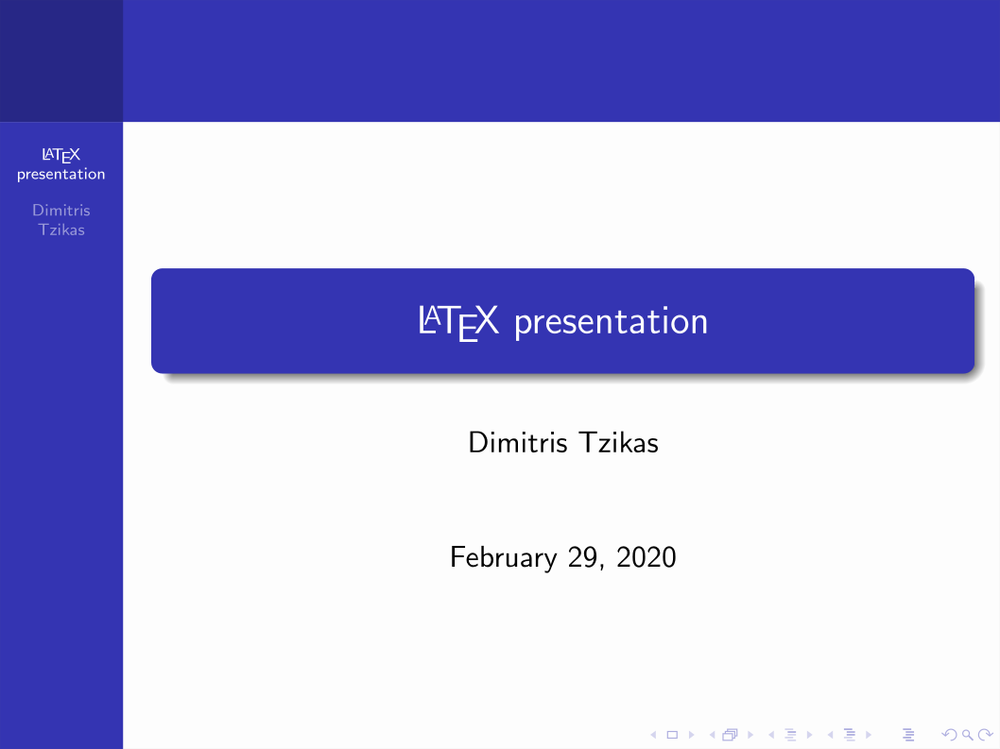Για να ορίσουμε το δικό μας χρώμα χρησιμοποιούμε τις παρακάτω εντολές.
\usetheme{PaloAlto} \definecolor{color-name}{rgb}{.0,.31,.67} \usecolortheme[named=color-name]{structure}
Ορισμός τίτλου και υπότιτλου.
... \begin{frame} \frametitle{Title} \framesubtitle{Subtitle} \begin{itemize} \item One \item Two \item Three \end{itemize} \end{frame} ...
... \begin{frame}{Title}{Subtitle} \begin{itemize} \item One \item Two \item Three \end{itemize} \end{frame}
Επίσης, μπορούμε να δηλώσουμε τις ενότητες που έχει η παρουσίαση μας.
... \begin{document} \maketitle \section{Section 1} \begin{frame}{Title}{Subtitle} \begin{itemize} \item One \item Two \item Three \end{itemize} \end{frame} \section{Section 2} \begin{frame}{Title2}{Subtitle2} \begin{itemize} \item One \item Two \item Three \end{itemize} \end{frame} \end{document}
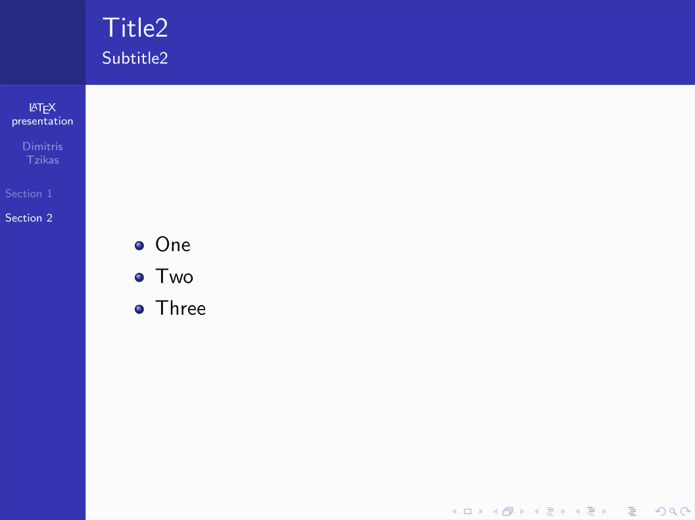Columns.
... \begin{frame} \begin{columns} \column{.5\textwidth} Column1 \column{.5\textwidth} Column2 \end{columns} \end{frame}
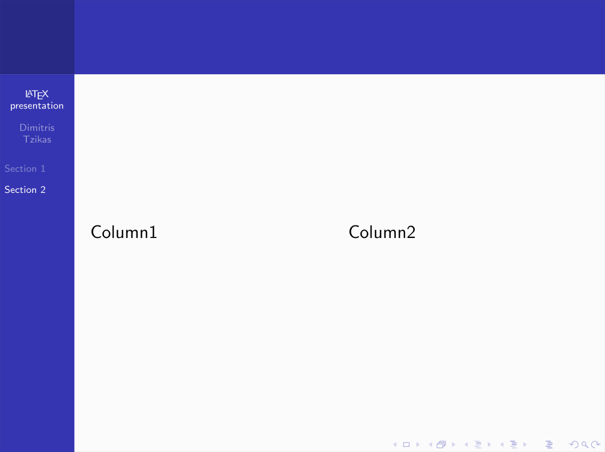Για περισσότερα πατήστε εδώ.
Πακέτα
Οι χρήστες του MiKTeX στα Windows και του MacTeX στο macOS, δεν χρειάζεται να κάνουν τίποτα καθώς τα πακέτα θα εγκατασταθούν αυτόματα. Οι χρήστες που χρησιμοποιούν pdflatex ή κάποια παρόμοια έκδοση, θα χρειαστεί να κατεβάσουν τα πακέτα μέσω κάποιου άλλου προγράμματος. Ένα πρόγραμμα που βοηθάει να κατεβάσουμε τα πακέτα είναι το tlmgr.
Εγκατάσταση του πακέτου pythonhighlight.
tlmgr install pythonhighlight sudo texhash
Το texhash ενημερώνει το latex.
Επίσης για την απλοποίηση αυτής της διαδικασίας μπορούμε να κάνουμε ένα ψευδώνυμο.
alias texpackage='texpackage(){tlmgr install $1 && sudo texhash}; texpackage'
Το ψευδώνυμο το τοποθετούμε στο αρχείο ρύθμισης του κελύφους που χρησιμοποιούμε (bash -> ~/.bashrc, zsh -> ~/.zshrc, etc).